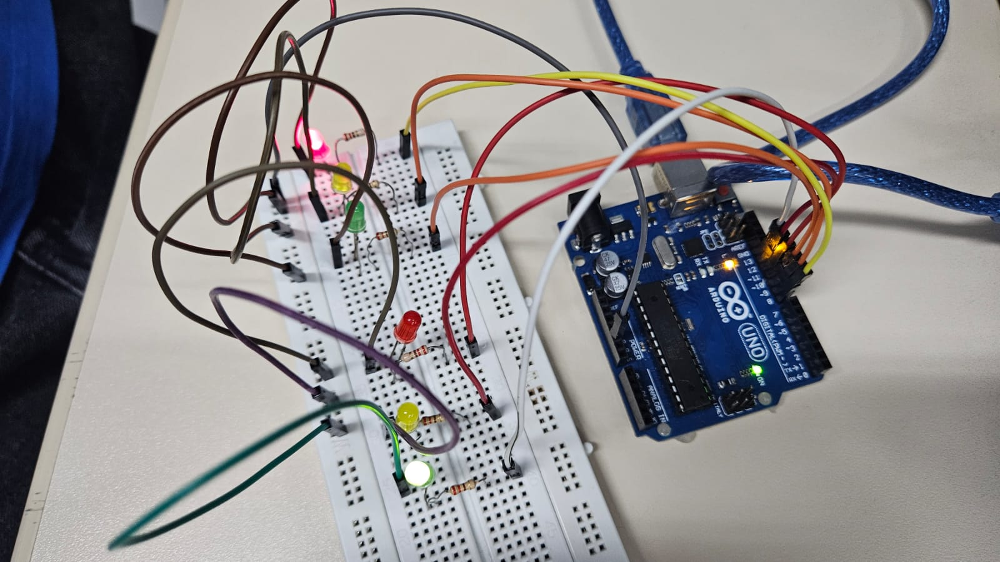
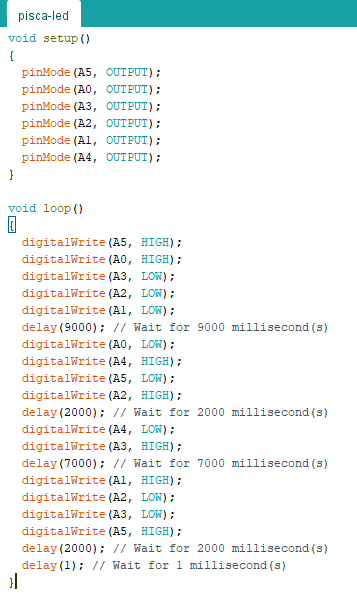

Montagem Prática
Vídeo da Montagem Prática
Arduino IDE Semaforo duplo
Código C++
void setup()
{
pinMode(A5, OUTPUT);
pinMode(A0, OUTPUT);
pinMode(A3, OUTPUT);
pinMode(A2, OUTPUT);
pinMode(A1, OUTPUT);
pinMode(A4, OUTPUT);
}
void loop()
{
digitalWrite(A5, HIGH);
digitalWrite(A0, HIGH);
digitalWrite(A3, LOW);
digitalWrite(A2, LOW);
digitalWrite(A1, LOW);
delay(9000);
digitalWrite(A0, LOW);
digitalWrite(A4, HIGH);
digitalWrite(A5, LOW);
digitalWrite(A2, HIGH);
delay(2000);
digitalWrite(A4, LOW);
digitalWrite(A3, HIGH);
delay(7000);
digitalWrite(A1, HIGH);
digitalWrite(A2, LOW);
digitalWrite(A3, LOW);
digitalWrite(A5, HIGH);
delay(2000);
delay(1);
}